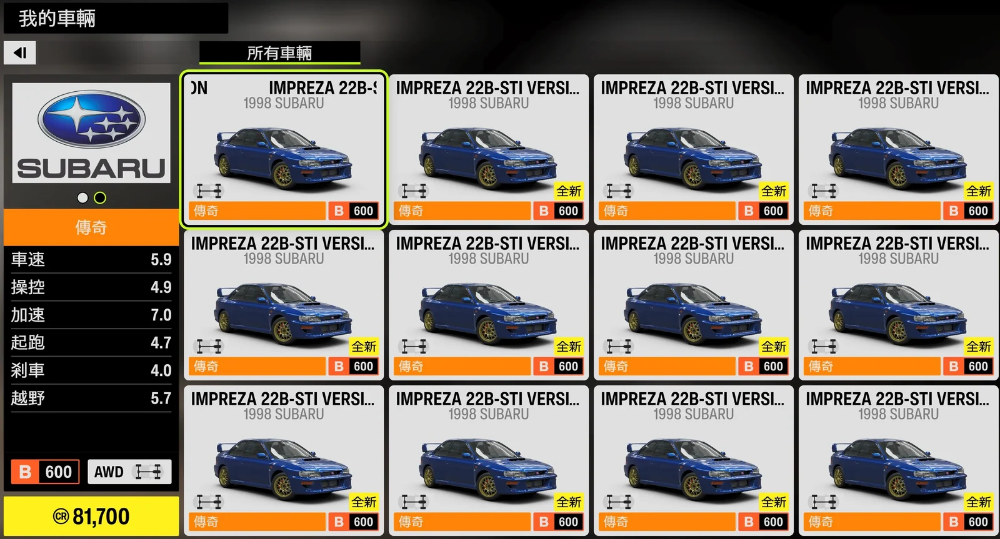

第三部分 — 自動解鎖 22B 轉輪
自動解鎖 22B 轉輪
1
整理車輛路徑（不必刪車）
工具會由上而下、整欄遍歷你選定範圍內的車輛。只要確認該範圍內都是要解鎖的 22B-STi、路徑上不要夾雜其他車輛即可——不需要刪除車庫裡的其他車。
2
依「最近新增」排序
在車庫畫面按 X 開啟排序選單，選擇「最近新增」。工具每完成一輛後會自動重新排序。
3
停在「我的住所」車庫畫面
讓遊戲停在我的住所裡的車庫主畫面（非大世界選單），並確認第一輛要解鎖的車輛位於左上角（最新）。

我的住所裡的車庫準備就緒 — 第一輛車位於左上角，所有車輛均為 22B-STi
4
設定解鎖路徑與車輛範圍
在功能面板中：用解鎖路徑格狀圖勾選要解鎖的熟練度節點（工具以鍵盤 WASD＋Enter 沿此路徑解鎖，無需擷取節點）；再用車庫格選擇要處理的連續車輛範圍——起始列、中間整欄數、結束列，對應車庫中由上而下的車輛區塊。
5
按下開始
切換到側邊欄的「⭐ 解鎖轉輪」功能，點選「▶ 開始」或按 F9，倒數後切換回遊戲。
6
全自動執行
工具逐車（由上而下、整欄）進入、開啟熟練度、以鍵盤解鎖節點，完成後返回車庫移至下一輛，直到處理完設定範圍。